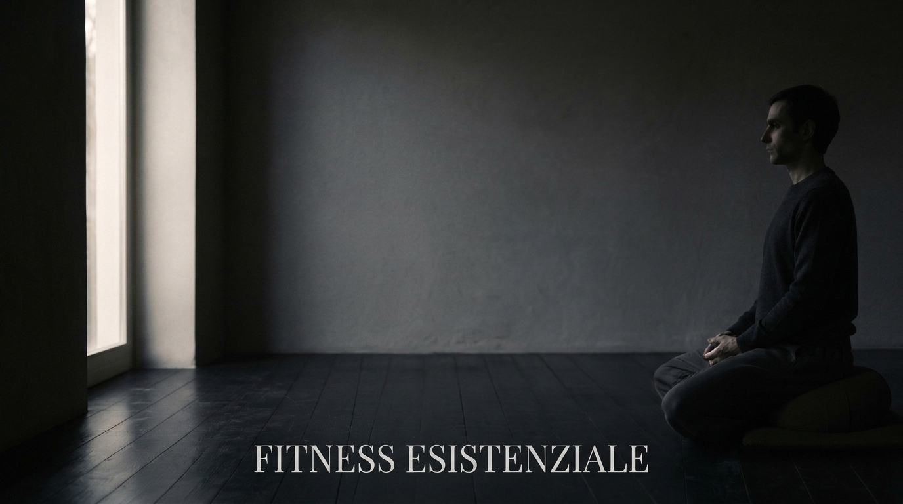

Quella sensazione che hai quando qualcosa non torna tra chi senti di essere e come vivi il tuo quotidiano. Nel lavoro che non ti nutre. Nell'energia dispersa in mille cose inutili. Nella produttività usata come scudo invece che come espressione. Nelle relazioni che non ti nutrono.
Non ti serve motivazione: ti serve capire qual è la frizione. Io la chiamo così.
Ci sono passato anch'io. Non dico che l'ho risolta: piuttosto l'ho attraversata, finché ha smesso di essere ostacolo. Di questo scrivo.
La postura snella ed eretta verso la vita. Adesione e vitalità. Dal latino ex-sistere: emergere, venire alla luce.
Ma quella postura non è un dato: si acquisisce. Chiede un allenamento quotidiano. Non del corpo, dell'esistenza. Di qui il nome.
Non mi alleno per fuggire dalla vita. Mi alleno per aderirvi. Anche nei giorni no. Soprattutto nei giorni no.
Fitness Esistenziale non l'ho teorizzato: l'ho attraversato con lutti, relazioni tossiche, perdite finanziarie, malattia. Sono tornato in piedi.
E l'ho fatto scrivendo. La scrittura è come do forma a ciò che vivo: non per insegnare, per capire.
Quello che dico è vero solo per me. E forse proprio per questo può risuonare: non perché sia universale, ma perché è personale. È umano.
È avere un gesto che, quando l'energia crolla, ti tiene il filo con te stesso. Non serve a essere produttivi. Serve a non perderti. Lo spostamento da zero a uno vale più di qualsiasi performance.
Il mio si chiama Protocollo Minimo: meditazione, affermazione, musica, scrittura, in trentacinque minuti. Ma è il mio. Il tuo lo costruisci tu: una bussola non si consegna, si costruisce.
Non è un traguardo. La disciplina vale finché è mezzo: quando diventa il fine (fare per non sentire) è solo uno scudo contro il sentire. Quando invece smette di essere sforzo e si fa natura, ha un nome: Grazia.
Su Substack: pratica, filosofia, e l'onestà di chi attraversa mentre scrive. Se ti riguarda, puoi seguire.
Substack →